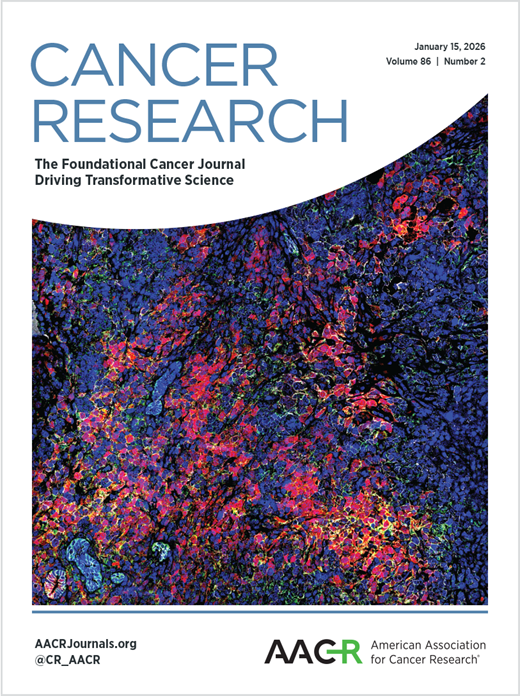

Awards, consortium meetings and the latest publications from the ImmuneT-ME network and its partners.
IMPACT-T has been awarded funding through the EP PerMed Networking Support Call 2025, enabling the IMPACT-T meeting on 26–27 January 2027 at Design Offices Leipzig, bringing together clinicians, researchers, patient advocates, policymakers and industry partners from across Europe. The meeting focuses on translational barriers to personalised medicine in T-cell leukemias and lymphomas (TCLs), building on JAKSTAT-TARGET, ImmuneT-ME and SURPASS-TNBC, working towards biomarker-driven trial concepts and sustainable networks.

On 25–26 February 2026, partners of the IMPACT-T network met in Cologne for the first in-person consortium meeting. Over two days, participants exchanged updates, discussed project ideas, and explored how ImmuneT-ME concepts can be advanced into future collaborative initiatives, alongside a guided city tour.

A study led by Heidi A. Neubauer investigates JAK inhibition as a targeted strategy in hepatosplenic T-cell lymphoma (HSTCL). With partners including Marco Herling and Tero Aittokallio, it establishes STAT5B-driven preclinical models and identifies upadacitinib as a promising candidate.

A publication led by Tero Aittokallio introduces TCL-38, an openly available multi-modal resource based on genomic, transcriptomic, epigenetic and drug-response profiling of 38 TCL cell lines, identifying subtype-specific vulnerabilities and biomarkers.